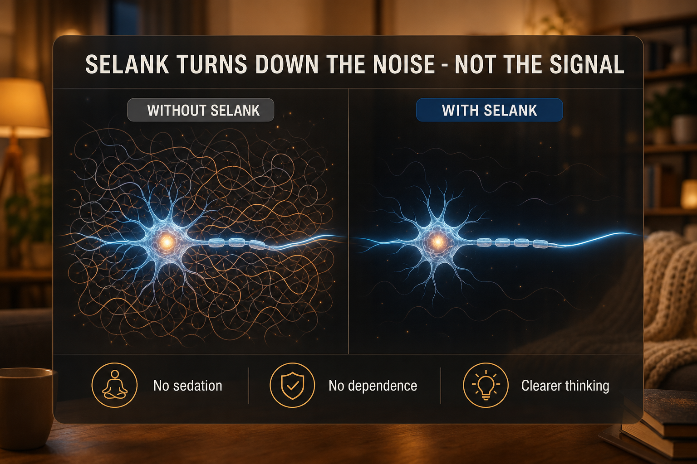

What Selank Is
Selank is a heptapeptide developed in the 1990s at the Institute of Molecular Genetics in Russia as a synthetic analog of tuftsin - a naturally occurring immunomodulatory tetrapeptide. It is approved as a prescription drug in Russia for anxiety and neurasthenia.
It modulates serotonin, dopamine, GABA, and enkephalin metabolism without binding to a single specific receptor. This explains why it produces calming effects without the receptor downregulation and dependence of benzodiazepines. Like Semax it is administered intranasally, reaching the CNS via the olfactory pathway.
Plain English Version
Turning Down the Background Volume
For many people in their 40s, chronic low-grade anxiety is just the background volume of everyday life. Not a panic attack. Not clinical anxiety. Just the constant low hum of unprocessed stress that makes everything harder.
Selank does not turn off your brain or sedate you. What users consistently describe is the background volume getting quieter. You can still hear everything - but you're not straining to focus over the constant hum. Things that actually matter come through more clearly.
This is why Selank and Semax pair so well. Semax turns up the signal for focus. Selank turns down the noise competing with that signal. More of what you want, less of what gets in the way.
One sentence: Selank quiets the mental noise of chronic low-grade anxiety without sedation or dependence, leaving the signal you want to focus on cleaner and clearer.
How To Picture It

How It Works
Selank modulates serotonin, dopamine, GABA, and enkephalin systems without single-receptor binding. It inhibits enkephalin-degrading enzymes prolonging calming peptide activity. It regulates IL-6 and T-helper cell balance providing immune modulation. This broad gentle mechanism avoids receptor downregulation and dependence.
Documented Benefits
Dosing Protocol
| Protocol | Dose | Frequency | Route |
|---|---|---|---|
| Standard | 250-500mcg | Once or twice daily | Intranasal |
| Microdose | 100-200mcg | Every few hours | Intranasal |
| Cycle | 10-14 days on | 7 days off | Either |
SK5 (5mg) + 5ml sterile water = 1mg/ml. 500mcg = 0.5ml = 10 drops.
Dosage Build-Up Timeline
- Week 1-2: 250mcg once daily
- Week 3-10: 500mcg once or twice daily
- Week 11: 7 days off
- Repeat 10-14 day cycles
Common Mistakes
overlapping GABA/serotonin pathways
Contraindications And Cautions
interaction risk
discuss with physician
avoid; mechanism not characterized in psychotic conditions
What To Track
- Anxiety levels 1-10 daily, first 2 weeks
- Sleep quality
- Emotional reactivity to stressors weekly
- Mood stability
- Any cognitive dulling (reduce dose if occurs)
Stacks Well With
- Semax - focus/BDNF plus anxiety reduction; space 15-30 min
- NAD+ - energy complements reduced cognitive friction
- KPV - for inflammation-component anxiety
Sources
- PeptideInitiative Selank. peptideinitiative.com
- Helimeds Semax vs Selank 2026. helimeds.com
- Selank Wikipedia. en.wikipedia.org/wiki/Selank
- PubMed Selank anxiety. pubmed.ncbi.nlm.nih.gov
For educational and research documentation purposes only. Not medical advice. Always speak with a qualified healthcare professional before making health decisions.